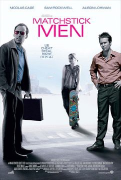
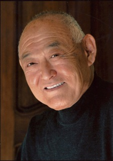

#2265 Tricks
Alternativ: Matchstick Men
 
 IMDB-Wertung: 7.3 / 10
IMDB-Wertung: 7.3 / 10  Metascore: 61
Metascore: 61 
Roy Waller ist nicht nur ein Betrüger, sondern auch ein bemerkenswerter Phobiker und Zwangsneurotiker mit so vielen Ticks und Macken, wie er Haare auf dem Kopf hat. Während er seinen Psychiater auf Trab hält, plant er mit seinem smarten Kumpel Frank Mercer den ganz großen Coup, einen Betrug von beachtlichen Ausmaßen. Doch mitten in den Vorbereitungen steht plötzlich Angela in der Tür, Roys 14jährige Tochter und zieht bei ihm ein. Jetzt muß Roy Farbe bekennen und auch mal Vater sein. Das funktioniert natürlich nicht lange, bis die helle Angela erkennt, was ihr Vater so treibt. Und in beiseitigen Einvernehmen mischt der Teenager bei dem großen Schwindel schließlich mit...
Jahr: 2003
Dauer: 116 Minuten
FSK: 12
Land: USA Studio: Warner Bros.Tonspuren: DD5.1 - ,
Untertitel:
Auflösung: 1080p (1920x800) Größe: 9205 MB
Genre: Komödie, Krimi, Drama, Thriller
Regisseur:  Ridley Scott
Ridley Scott
Drehbuch: Eric Garcia, Nicholas Griffin, Ted Griffin
Soundtrack: Hans Zimmer
Darsteller:
 Nicolas Cage als Roy Waller
Nicolas Cage als Roy Waller Sam Rockwell als Frank Mercer
Sam Rockwell als Frank Mercer Alison Lohman als Angela
Alison Lohman als Angela Bruce Altman als Dr. Klein
Bruce Altman als Dr. Klein Bruce McGill als Chuck Frechette
Bruce McGill als Chuck Frechette- Jenny O'Hara als Mrs. Schaffer
 Steve Eastin als Mr. Schaffer
Steve Eastin als Mr. Schaffer Beth Grant als Laundry Lady
Beth Grant als Laundry Lady Sheila Kelley als Kathy
Sheila Kelley als Kathy Fran Kranz als Slacker Boyfriend
Fran Kranz als Slacker Boyfriend- Nigel Gibbs als Holt
-  Bill Saito als Pharmacist #1
- Tim Maculan als Pharmacist #2
- Lynn Ann Leveridge als Bank Clerk
 Giannina Facio als Bank Teller
Giannina Facio als Bank Teller Sonya Eddy als Parking Garage Cashier
Sonya Eddy als Parking Garage Cashier- Michael Clossin als Long Winded Parking Booth Driver
- Paul Hubbard als Store Clerk
- Monnae Michaell als Carpet Store Manager
- Marco Kyris als Pizza Boy
- Jerry Hauck als Taxi Cab Driver
- Jim Zulevic als Bartender
- Ramsey Malouky als Hospital Intern
- Kate Steele als Strip Club Waitress
- Adam Clark als Strip Club Bouncer
- Daniel Villarreal als Car Wash Employee
- Larry Vigus als Pharmacy Customer , uncredited
 Melora Walters als Heather, Roy's Ex-Wife , uncredited
Melora Walters als Heather, Roy's Ex-Wife , uncredited Tim Kelleher als Bishop
Tim Kelleher als Bishop Stoney Westmoreland als Man in Line
Stoney Westmoreland als Man in Line- Kim Cassidy als Stripper
- Dennis Anderson als Cashier
- Andi Sherrill als Pharmacy Cashier
- Marco Assante als Valet Parker
Datei: X:\2003(N-Z)\Tricks (2003, FSK12, 1920x800).mkv seit 25.10.2015
Festplatte: HD 2003-2004-2005(A-F)
 Es gibt insgesamt 46 Filme in der Gruppe '2003(N-Z)'
Es gibt insgesamt 46 Filme in der Gruppe '2003(N-Z)'